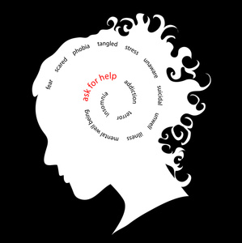

Benefits
1. Sudoku is a “Brain Game”
- 2. Sudoku might help people reduce their risk of Alzheimer’s disease
- 3. Sudoku promotes logic, deduction and problem solving
- 4. Sudoku helps people reconnect with different parts of their brain that
they might not always get to utilize in everyday life
- 5. It also helps us get better at spotting patterns, filling in gaps, and recognizing opportunities.
6. All of these mental abilities are very important to continue to utilize throughout our lives.
- 7. As the old saying goes, “Use it or lose it!”
- 8. Sudoku creates a sense of order and accomplishment
- 9. It reflects and reinforces the feeling of creating order and getting things done

Go Home